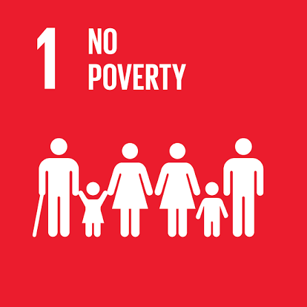
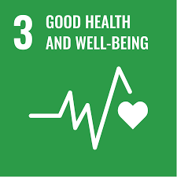
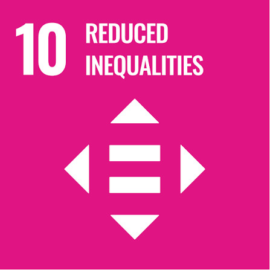
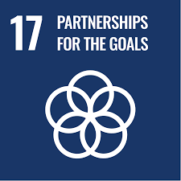

Visible trends and patterns at a global scale
Strong economies and high standards of living: countries that have higher wealth and
stronger economies typically have a higher chance of getting a top ranking in the world happiness index
because when a nation is financially stable, people start to gain easier access to clean water, nutritious food,
reliable electricity, and, most importantly, good jobs, which removes the need for the citizens of that
country to stress about daily survival and instead gives them a better chance at living a comfortable life.
Reliable healthcare and longer life expectancy: normally, countries where people
live longer and healthier lives get ranked higher in the world happiness index because this shows that the citizens
have access to good hospitals and clean environments. This means that people have to suffer less from diseases that
can be prevented, which improves the citizens' daily mood and overall happiness.
Safe communities and low corruption: Happiness is connected with how safe a country
feels. In countries like Finland, Iceland, and Denmark, which usually rank near the top of the World Happiness
Index, citizens trust their police, courts, leaders, and overall governance structure. On the other hand, in
countries that have high corruption rates, people start feeling ignored, which can affect the ranking of countries in
the World Happiness Index.
Personal freedom and work life balance: Countries where citizens have the freedom to
choose their own career, lifestyle, and beliefs without any social or government interference consistently score
higher. Fair working hours, paid vacation time, and support for families also give people time to enjoy their
lives when they are not working.
Social support: Having friends, family, and neighbors that you can depend on during
hard times is one of the main sources of happiness globally. This is why countries with closely tied bonds between
people, like Costa Rica and Mexico, rank high even though they do not have the best economic status in the world.
Social media and technology: In countries that have access to technology and social
media, the amount of time people spend on screens makes a perceptible difference. Using phones and the internet
to chat with friends, learn, or stay informed may support happiness, but spending a lot of time scrolling through
social media feeds is linked to higher stress, loneliness, and lower happiness levels, especially among teenagers
and young adults.
War and instability: countries that are suffering from war, political chaos, and
extreme poverty, such as Afghanistan, Sierra Leone, and Malawi, are ranked towards the bottom of the world happiness
index because without basic peace, safety, and shelter, it is practically impossible for citizens to feel
satisfied with their lives.
Big countries dropping in rank: Rich countries are starting to lose their rank
because young people are starting to struggle. For example, countries that were at higher ranks have dropped out of the
top 10 in the past few years. This is because of high housing costs, stress generated by jobs, and loneliness,
which have made both teenagers and adults feel much unhappier.
Developing nations climbing up in rankings: At the same time, many countries in
Eastern Europe and Latin America, such as Costa Rica, Mexico, and Slovenia, have significantly moved up in the ranking
because of growing job opportunities, better public services, and strong family support, which have helped the
citizens feel more hopeful about the future.
Scenario in India
In the 2026 World Happiness Report, India secured the 116th rank out of 147 countries. This shows an
improvement when compared to the 118th rank achieved in 2025. This pattern has remained constant
since 2020, when India was ranked 139th, and since 2020, India has slowly clawed its way up the
leaderboard. Even though India is one of the fastest growing economies in the world, its happiness
rank is still towards the bottom of the global happiness index because economic growth does not
directly solve everyday struggles of citizens like unequal incomes, temporary jobs, crowded cities,
pollution, and, most importantly, corruption. Lack of social support has also held the
overall rank of India from improving. At the same time, India has gained access to better
healthcare, digital services, and government schemes, which are slowly helping millions of
people improve their lives and feel independent which significantly increases happiness levels
of people. Within South Asia, India is in the middle in terms of the World Happiness Index, as it
ranks lower than some neighboring countries like Nepal and Pakistan, where people have stronger
community support, while ranking higher than Bangladesh and Sri Lanka.
Connection to Sustainable Development Goals
The World Happiness Index is justified using 6 main variables, as mentioned above, and they are
directly linked to the Sustainable Development Goals set by the United Nations General Assembly:
SDG 1: Sustainable Development Goal 1 is no poverty,
and this is connected to GDP per capita because when there is a higher economic output per
person, it reduces poverty rates and provides basic financial security that is required for a
stable life.

SDG 3: Good health and well-being, which is
Sustainable Development Goal 3, is connected to healthy life expectancy because living a longer
life without facing any major diseases directly improves mental health and daily comfort.

SDG 8: Sustainable Development Goal 8 is decent work
and economic growth, and this is also linked with GDP per capita because access to fair
salaries, jobs, and steady economic opportunities gives people the stability required to have a
successful life.

SDG 10: Sustainable Development Goal 10 is reduced
inequalities, and this is directly connected with the variable social support because when there
are strong communities, it ensures that vulnerable citizens have someone to rely on during
difficult times in their lives.

SDG 16: Peace, justice, and strong institutions is
SDG 16, and it is connected to both perceptions of corruption and freedom to make life choices
because transparent, reliable governments and safe societies protect personal freedom and trust,
which are among the strongest factors of national happiness.

SDG 17: Partnerships for the Goals is connected to
generosity because a culture of giving, volunteering, and mutual aid reflects the local
cooperation and shared responsibility required to achieve goals.



.png)